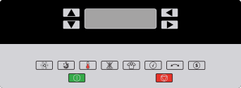
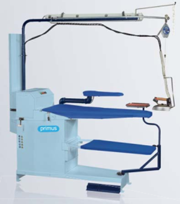
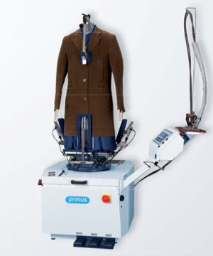
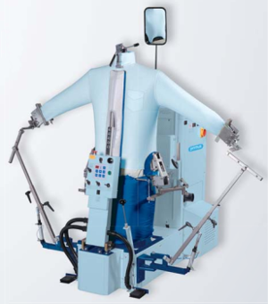
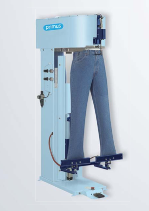

Na całym świecie standardy środowiskowe są coraz bardziej rygorystyczne, ponieważ coraz więcej osób staje się świadomych ekologicznie. Tendencja ta ma również zastosowanie w branży prania i czyszczenia na sucho. System czyszczenia na mokro “ SoftWash “ pozwala wykorzystać ten trend.
“ SoftWash “ to dostosowany do potrzeb proces, który umożliwia czyszczenie nawet najbardziej delikatnych tkanin oraz odzieży specjalistycznej np. ochronnej bądź sportowej, na mokro, bez rozpuszczalników. Stwarza to nowe możliwości w segmentach rynku, takich jak pralnie chemiczne, domy opieki, usługi pogotowia ratunkowego itp. SoftWash - czyszczenie na mokro zapewnia zrównoważony i długoterminowy biznes.
Dlaczego Primus SoftWash
Niższe koszty
Koszt budowy pralni w oparciu o system SoftWash jest o 50% mniejszy w porównaniu
do wyposażenia tradycyjnej pralni do czyszczenia na sucho, powszechnie znanej jako tzw.
pralnia chemiczna.
Zalety
łatwa instalacja i obsługa
brak kosztów destylacji
brak odpadów do zwrotu
Elastyczność
Jedno wyposażenie pralnicze, dwa procesy prania. Możesz wykonywać tradycyjne
pranie jak w pralni wodnej bądź prać w technologii “ SoftWash Wet Cleaning ”
delikatne oraz specjalistyczne tkaniny.
Możliwości
szeroki zakres tkanin, które dzięki SoftWash mogą być prane w wodzie
rzeczy prane tradycyjnie
wełna - łatwa do czyszczenia, należy ją suszyć ostrożnie
jedwab - łatwy do czyszczenia, zachowuje kolory
syntetyki - mikrowłókna i inne materiały syntetyczne
Goretex - można czyścić bez utraty właściwości membrany, zwiększenie
wodoodporności
skóra i zamsz - aż 90% rodzajów może być prane na mokro, łatwe wykańczanie
odporność ogniowa
Nowy biznes
Ekologia, produktywność i zyskowność - na każdej z tych płaszczyzn, zawsze jesteś o krok
przed konkurencją. Podążasz za światowymi trendami, zyskujesz nowych klientów,
inwestujesz mniej otrzymując znacznie więcej niż inni.
Świat się zmienia, przepisy o ochronie środowiska są coraz bardziej restrykcyjne a
dostsowanie biznesu do ich wymogów jest często bardzo kosztowne. Dzięki technologii
SoftWash Wet Cleaning
, masz to już za sobą i skupiasz się na rozwoju swojego biznesu.
Korzyści
brak ograniczeń prawnych
brak podatków za rozpuszczalniki
brak ryzyka dla klientów i operatorów maszyn
brak łatwo palnej chemii
brak ryzyka dostosowania technologii do przyszłych zmian w prawie
Świeże, czyste pranie
Jedno wyposażenie pralnicze, dwa procesy prania. Możesz wykonywać tradycyjne
pranie jak w pralni wodnej bądź prać w technologii “ SoftWash Wet Cleaning ”
delikatne oraz specjalistyczne tkaniny.
Możliwości
szeroki zakres tkanin, które dzięki SoftWash mogą być prane w wodzie
Pranie delikatnych tkanin i specjalistycznej odzieży
Jedno wyposażenie pralnicze, dwa procesy prania. Możesz wykonywać tradycyjne
pranie jak w pralni wodnej bądź prać w technologii “ SoftWash Wet Cleaning ”
delikatne oraz specjalistyczne tkaniny.
Możliwości
szeroki zakres tkanin, które dzięki SoftWash mogą być prane w wodzie
Wyposażenie pralnicze dla systemu SoftWash
Pralnicowirówki FX
Pralnicowirówki serii FX, wyposażone są w standardzie w rewolucyjny bęben
Cascade Drum. Małe wypukłości pomiędzy perforacją bębna, w tej unikatowej i
innowacyjnej koncepcji, dostarczają wiele zalet i korzyści. Zastosowane rozwiązania techniczne
oraz konstrukcyjne zapewniają maksymalną ochronę najdelikatniejszych tkanin i doskonały rezultat
prania.
Cechy
odwirowanie wody z prania jest o wiele bardziej skuteczne, bo dzięki koncepcji
Cascade
jest większa perforacja bębna na tej samej powierzchni
rezultaty prania są również o wiele lepsze, ponieważ specjalny kształt otworów bębna
dostarcza dodatkowej akcji mechanicznej podczas procesu prania
duża średnica zaworu spustowego ⦱76 mm zapewnia szybkie odprowadzenie zużytej wody a tym samym skraca czas prania
duża średnica okna załadunkowego ułatwia załadunek i rozładunek maszyny
napęd z przemiennikiem częstotliwości, w połączeniu ze sterownikiem mikroprocesorowym, zapewnia
lepsze rezultaty prania, płynną pracę i dłuższą żywotność urządzenia
detergenty są dodawane do kąpieli piorącej od dołu bębna wewnętrznego, w najbardziej odpowiednim czasie
podczas procesu prania, co zapobiega bezpośredniemu kontaktowi chemii pralniczej z praniem i zapobiega
potencjalnym uszkodzeniom prania przez detergenty.
woda w procesie schładzania jest dodawana w taki sam sposób co detergenty. Ta koncepcja zapobiega szokowi termicznemu - głównej przyczynie kurczenia się prania
maszyny wyposażone są w standardzie w moduł podłączenia pomp płynnych środków piorących, który dla serii FX umożliwia podłączenie aż do 13 pomp
napęd z przemiennikiem częstotliwości oraz wpełni programowalny sterownik mikroprocesorowy stanowią standardowe
wyposażenie modeli z technologią SoftWash
Sterownik - XControl Plus
Zalecane rozwiązania techniczne
CascadeDRUM
Unikatowa perforacja bębna wewnętrznego, mimo wysokiego współczynnika odwirowania prania gwarantuje, że pranie nie przykleja się do powierzchni bębna, co upraszcza rozładunek i podnosi żywotność pranych tkanin. W bębnie znajduje się więcej perforacji na tej samej powierzchni a zatem odwirowanie wilgotności jest bardziej skuteczne. Konstrukcja wypukłości powoduje odwirowanie jeszcze większej ilości wody, więc procent wilgotności po odwirowaniu jest bardzo niski. Kształt otworów w bębnie powoduje dodatkowe działanie mechaniczne, co zapewnia jeszcze lepsze rezultaty prania
TRACE-TECH
Oprogramowanie do zarządzania zapewnia zapis wkładu każdego prania, co stanowi gwarancję
zgodności ze standardami higieny. Zapis można zachować i przywołać w dowolnej chwili.
Parametry procesu prania są stale monitorowane i zapisywane w celu przedstawienia
szczegółowego raportu procesu prania. Użytkownik otrzymuje również informację, jeśli
urządzenie nie może wykonać żądanego procesu.
XControl Plus
99 programów prania. Pełna konfiguracja parametrów prania i pracy urządzenia. Graficzny, czytelny wyświetlacz. Port USB. Programy ekonomiczne. Pełna kontrola nad optymalizacją procesu prania i zużyciem mediów.
PowerWash
Perforowane przewały bębna wewnętrznego dają dodatkowy efekt prania przez spriskiwanie tkanin
podczas procesu prania. W ten sposób osiągamy lepszy rezultat prania przy zużyciu wody o około
30% mniejszym.
Suszarki bębnowe T
Cechy urządzeń
w pełni programowalny sterownik mikroprocesorowy Full Controll OPL
aż do 20 programów suszenia
10 programów fabrycznych
swobodne programowanie czasu suszenia, temperatury i czasu schładzania
system pomiaru wilgotności senso.dry ®
osiowo-radialny przepływ powietrza RADAX ®
nierdzewny bęben wewnętrzny
rewersyjne obroty bębna dostępne w opcji dla każdego załadunku
duża średnica okna załadunkowego dla łatwego załadunku i wyładunku prania - aż o 42 % większa
niż w porównywalnych modelach
wysoki moduł załadunku tj. duża pojemność bębna - wyższa jakość suszenia
Sterownik - Full Controll OPL

Zalecane rozwiązania techniczne
RADAX
Innowacyjna technologia łącząca osiowy i radialny przepływ powietrza zwiększa skuteczność
procesu suszenia i wydatnie skraca jego czas. Tym samym obniżamy koszty zużycia energii,
zwiększamy produktywność i wydajność całego procesu suszenia.
senso.dry
System pomiaru wilgotności pozwala na suszenie tkanin do chwili osiągnięcia porządanej wilgotności. Dostępny z mikroprocesorem Full OPL zapobiega przesuszeniu i przez to ogranicza koszty energii i zakupu nowej bielizny.
PowerDry
System PowerDry to maksymalne wykorzystanie ciepłego powietrza podczas suszenia, a tym samym drastyczne zmniejszenie strat ciepła i zużycia energii. Cała energia i ciepłe powietrze jest wykorzystywane w procesie suszenia tkanin co skraca jeszcze czas suszenia i podnosi wydajność
EVO 4
Technologia suszarek z pompą ciepła EVO 4 polega na znacznym ograniczeniu zużycia energii na nagrzewanie - o ponad 60%. Dodatkowo, ponieważ 100% powietrza jest odzyskiwane, początkowy koszt inwestycji jest ograniczony - podczas instalacji tych suszarek nie ma konieczności instalacji układu kominowego ani wymuszenia dopływu świeżego powietrza. Co więcej zużyte powietrze jest odzyskiwane i ponownie wykorzystywane. Dodatkowe oszczędności pochodzą, ze znacznie ograniczonego poboru mocy - mniej niż 4 kW w porównaniu do 10-25 kW w przypadku tradycyjnych suszarek o tej mocy. Te wyjątkowe rezultaty technologii suszenia EVO4 osiągnięto przez zastosowanie zaawansowanej wiedzy o chłodzeniu powietrza i nagrzewaniu pompami ciepła. Konstrukcja urządzenia umożliwia łatwy dostęp do istotnych podzespołów, minimalizuje czas i koszt serwisu oraz napraw.
Suszarki komorowe DC i FDC
Cechy urządzeń
bardzo niskie zużycie energii, tylko 0.5 kWh/kg
krótki czas suszenia - 42 minuty
4 programy automatyczne i 1 na czas suszenia
system pomiaru wilgotności HTS ® mierzy poziom wilgotności co 1 sekundę, aby dokładnie określić kiedy pranie jest suche
łącznie 16 metrów wieszaków
podwójna ochrona przed przegrzaniem dla zapewnienia maksymalnego bezpieczeństwa pracy
zdejmowana górna część oblachowania dla zapewnienia wygodnej instalacji i konserwacji
program diagnostyczny, kody błędów aby obsługa serwisowa była jeszcze prostsza i szybsza
boki oraz drzwi wykonane z 2 warstw blachy, aby zapobiec stratom ciepła
wieszak na pranie może być obracany pod kątem 180 °
2 wentylatory tworzą doskonały balans pomiędzy odprowadzanym powietrzem a powietrzem ponownie wykorzystywanym w procesie suszenia
menu serwisowe pozwalające dostosować funkcje urządzenia
FDC - suszarka komorowa dedykowana do suszenia ciężkiej i specjalistycznej odzieży służb mundurowych, m.in. straży pożarnej, wojska i policji
wykańczanie odzieży fasonowej - stoły, formy
Urządzenia do prasowania końcowego odzieży fasonowej, stanowią wyposażenie dodatkowe podnoszące produktywność i wydajność pracy.
Zestaw do prasowania oraz formy do koszul, płaszczy i spodni to powszechnie
stosowane wyposażenie uzupełniające.
Zapewnia wysoką jakość prasowania oraz wygodę i komfort pracy.

Zestaw do prasowania

Manekin do żakietów i płaszczy

Manekin do koszul

Manekin do spodni